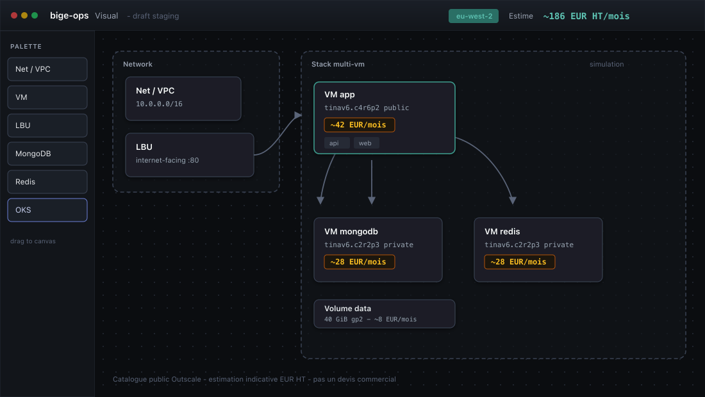

Less is more.
Une app desktop gratuite pour déployer sans te noyer.
Tu dessines ta stack — VMs ou Kubernetes — tu projettes le €, puis tu déploies sur ton compte. Terraform / YAML sortent derrière : ce n’est pas ce que tu viens écrire à la main.
bige-ops
GratuitGratuit · outil local · stack sur ton cloud · pas de plan de contrôle SaaS

brew tap simondelamarre/bige-ops && brew install --cask bige-ops
Dessine, projette le €, déploie — sans te noyer dans Terraform à la main.
Une app desktop gratuite pour déployer sans te noyer.
Tu dessines ta stack — VMs ou Kubernetes — tu projettes le €, puis tu déploies sur ton compte. Terraform / YAML sortent derrière : ce n’est pas ce que tu viens écrire à la main.
Ce n’est pas un Docker sur ton poste.
bige-ops tourne sur ta machine. Ta stack vit sur ton cloud. Secrets en local (sync optionnelle Vault / GitHub / Fly si tu le veux).
Tu projettes d’abord. Tu te connectes quand tu appliques.
Sans credentials cloud : explore et projette. Login seulement pour inventaire, plan et apply.
On regarde tes repos, pas seulement un dashboard.
Déployer reste gratuit. Scanner les dépôts, CVE et remédiation : la suite (crédits).
Les tiennes. Rien n’est gardé chez nous.
Anthropic, OpenAI, Gemini, Mistral — depuis ton poste. Pas de rétention côté bige-ops.
Bug ou idée : ouvre une issue sur le dépôt public. On lit, on priorise, on répond — sans toucher à ton graphe ni à tes secrets.
Aujourd’hui : Outscale (régions classiques + SecNumCloud) — pricing, apply, OKS.
En cours : Scaleway, OVHcloud, AWS, Azure, GCP, Fly.io — listés dans l’app, pas encore materialization / pricing complets. On ne se vend pas multi-cloud tant que ce n’est pas vrai.
